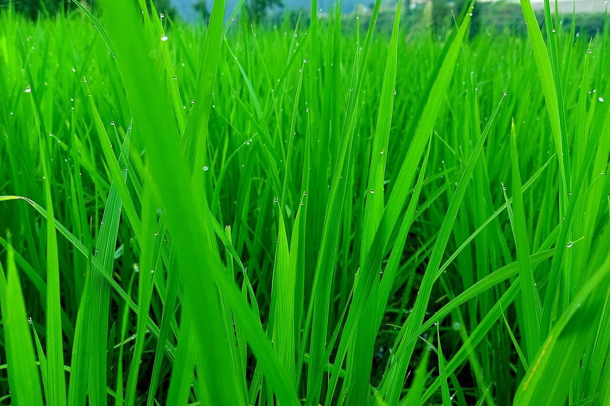

口コミ
こんなふうに思われるかも
カフェという業種から自然に想像できる声を、制作側が創作したものです。
以下は制作側が考えた創作のイメージ例で、実在のお客様の投稿ではありません。実際の口コミ・評価とは関係ありません。
いつか行ってみたいお店として気になっています。まずはInstagramをのぞいてみたいです。
店名の響きが気になって、どんな投稿があるのか見てみたいです。いつか足を運んでみたいと思っています。
営業時間などが分かったら、行ってみたいです。それまでは、Instagramの更新を楽しみにしています。

